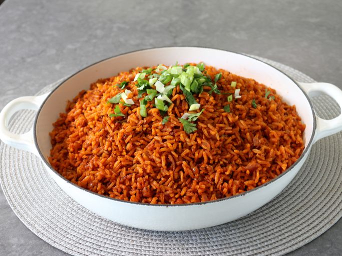

The Peakest Dish ngl
Jollof rice is the undisputed crown jewel of West African cuisine, a vibrant and aromatic one-pot masterpiece that sparks friendly "rice wars" over who prepares it best. At its heart, long-grain parboiled rice or jasmine rice is simmered in a rich, savory base of blended tomatoes, red bell peppers, onions, and scotch bonnets, which imparts a signature deep orange hue and a subtle, creeping heat. Infused with a fragrant medley of thyme, curry powder, and bay leaves, the rice absorbs every drop of the seasoned stock until it is perfectly tender and fluffy. Whether served at a festive wedding or a cozy Sunday dinner, Jollof rice is more than just a side dish,it is a smoky, flavorful celebration of cultural heritage that pairs beautifully with fried plantains and succulent grilled chicken.
Ingredients
- The Fresh Base
- 3 large red bell peppers (tatashe), deseeded
- 3-4 medium plum tomatoes
- 1-2 scotch bonnet peppers (ata rodo), adjust for your heat tolerance
- 2 medium red onions (one for blending, one for sauteing)
- 2 inches of fresh ginger, peeled
- The Rice & Liquids
- 4 cups long-grain parboiled rice (Basmati or Jasmine also work, but require less water)
- 4 cups chicken or vegetable stock (high quality makes a difference!)
- 1/2 cup vegetable oil
- 3 tbsp tomato paste (concentrate)
- The Aromatics & Spices
- 3-4 bay leaves
- tbsp curry powder
- 1 tsp dried thyme
- 2 bouillon cubes (e.g., Maggi or Knorr)
- 1 tsp garlic powder (or 3 cloves fresh minced garlic)
- Salt to taste
- 1 tbsp butter (optional, for that final glossy sheen)
Prepeparation steps
The key to perfect Jollof rice is patience. You aren't just boiling rice; you are steaming it in a concentrated explosion of flavor. Follow these steps to ensure every grain is separate, tender, and seasoned to the bone.
Prep the Flavor Base
Blend the red bell peppers, tomatoes, ginger, and one onion until completely smooth. Pour this mixture into a pot and boil it over medium-high heat for about 10-12 minutes until the water reduces and you're left with a thick, concentrated paste.Sauté the Aromatics
In a large, heavy-bottomed pot, heat the vegetable oil. Slice the remaining onion and sauté until translucent. Add the tomato paste and fry it for 5-8 minutes, stirring constantly. You want the paste to turn a dark, brick-red color and lose its sour metallic taste.Season the "Stew"
Add your boiled pepper puree to the fried tomato paste. Stir in the curry powder, thyme, garlic, bouillon cubes, bay leaves, and salt. Let this fry together for another 10 minutes until the oil starts to separate and rise to the top.Prepare the Rice
Wash your rice thoroughly in warm water several times until the water runs clear. This removes excess starch and prevents the rice from becoming "soggy" or sticky.Combine and Simmer
Add the washed rice to the pot and stir well so every grain is coated in the tomato base. Pour in your stock and the liquid should just barely cover the rice (about 1/2 to 1 inch above the surface).The "Steam" Phase
This is the most important part. Cover the pot tightly with aluminum foil, then place the lid on top to trap every bit of steam. Turn the heat down to low. Let it cook for 25–30 minutes without opening the lid.The Finish
Check if the rice is tender. If it's still a bit firm, give it another 5 minutes. Once done, stir in the butter and some fresh sliced onions or tomatoes if you like. Fluff the rice gently with a fork to avoid breaking the grains.
Homepage